Digital Humanities Crash-Course
April 19 — 26
Course slides & materials
Warning
This presentation is Non-Linear
Use SPACE to go forward, SHIFT+SPACE to go back
Plan for today
- Corpora Intro/reminder (very short, as you're probably all aware)
- Corpora and the Humanities
- 'Culturomics' with Google Books
- Existing Linguistic Corpora...
- and their use for non-linguistic research
- Turning your data into a corpus and querying it
but first
Let us get done with "The little humpbacked horse"!
Pushkin and Ershov
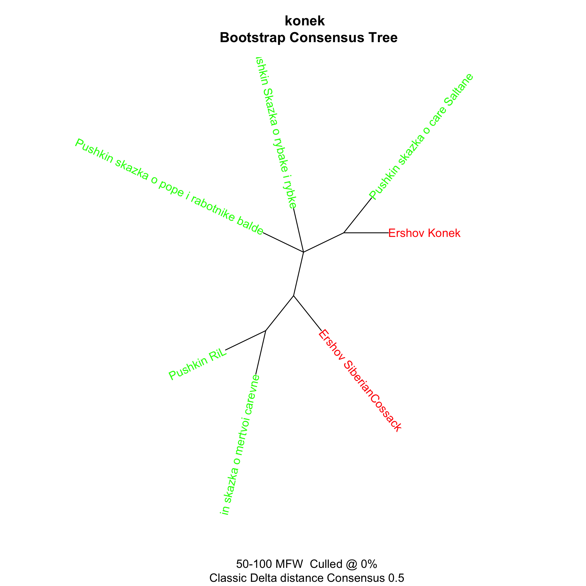Pushkin, Ershov and Lermontov

Pushkin, Ershov, and many others

And now corpora
Corpus
- Is, essentially, a collection of texts
- Put together for some reason
- (often) with some markup and/or metadata
Linguistic Markup Example (RNC)
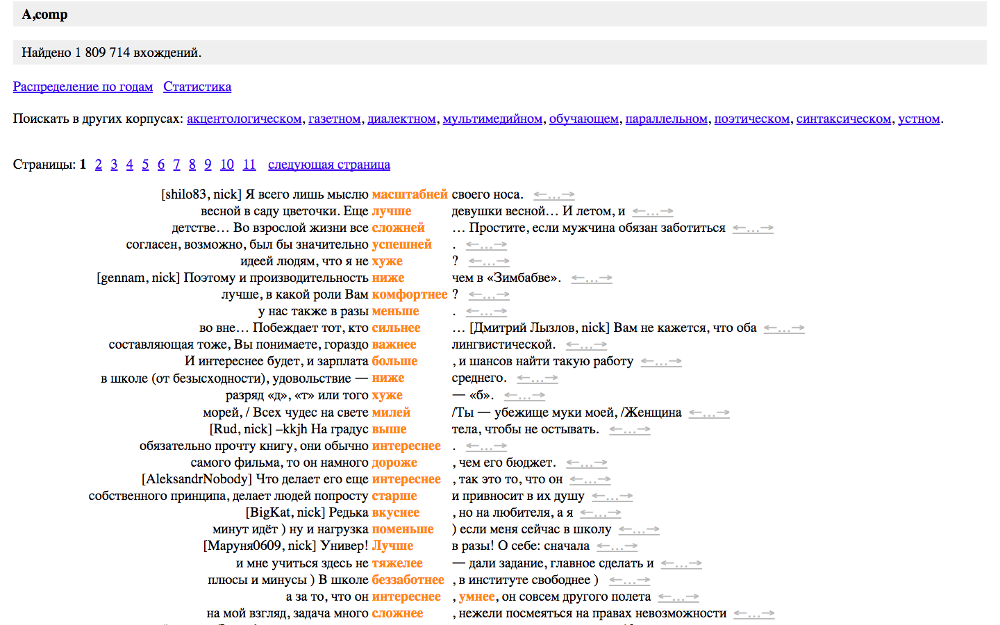Linguistic Markup Example (BNC)
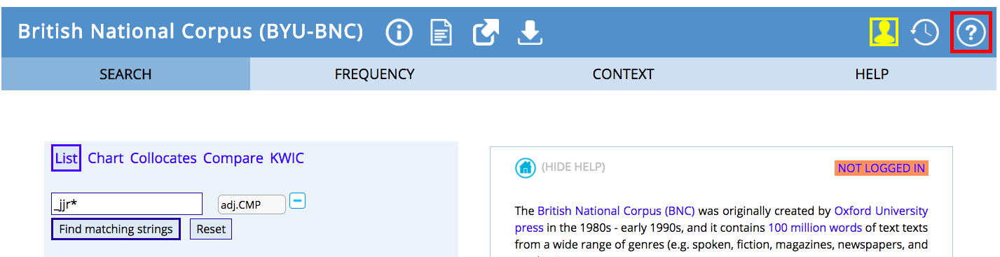 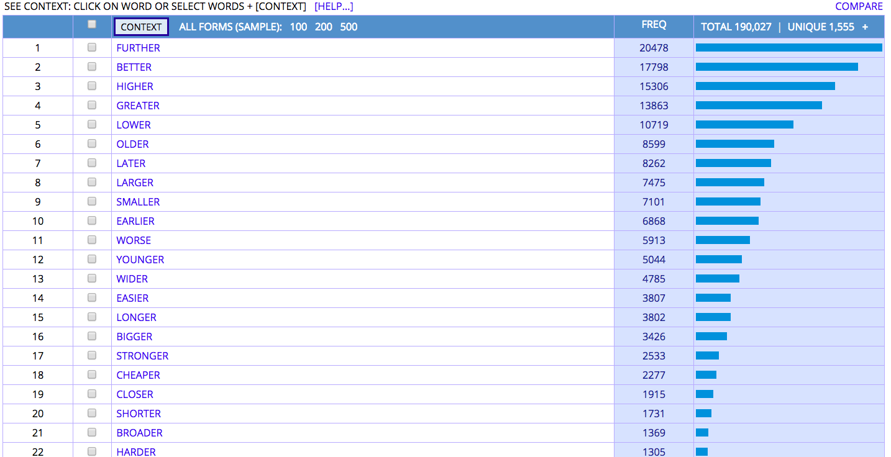Linguistic Markup Example (Google Books)
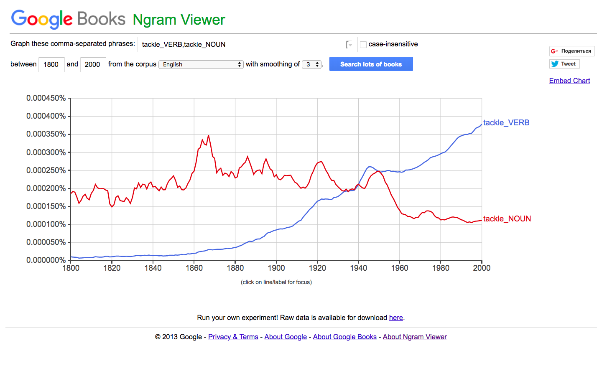Metadata Example (RNC)
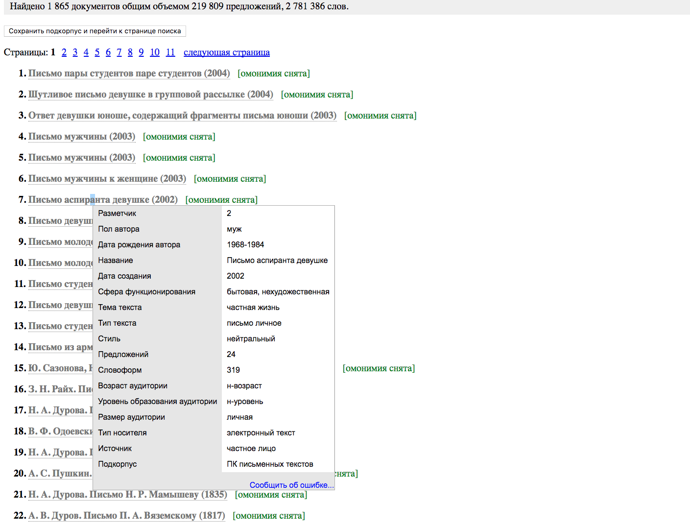What are these corpora by the way?
- RNC = Russian National Corpus (НКРЯ) at ruscorpora.ru
- BNC = British National Corpus, query interface (one of) at BYU-BNC
- Google Books and its Google Ngram Viewer interface
What sort of answers can corpora give?
When did they start saying that?
Клевый (cool)
Like Клевый ресторан (cool restaurant)
Догадки?
Клевый (cool)
Голова, брат, ты, как я погляжу!.. Клевую штуку придумал! Свадьба, стало быть, пойдет только на подмазку, а главное ― ширманам чистка.
[В. В. Крестовский. Петербургские трущобы. Книга о сытых и голодных. Ч. 5 (1867)]
When did they start saying this instead of that?
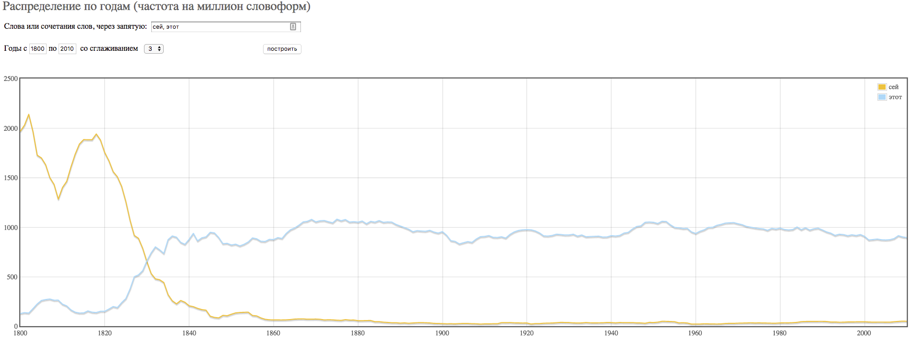Which of the two competing forms prevails (and when)?
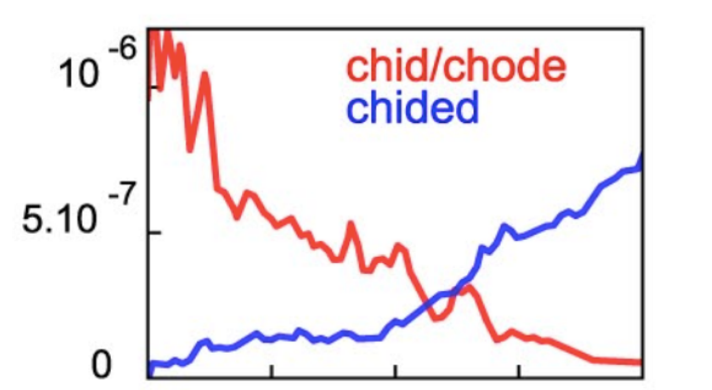When did the meaning change?
Противный (disgusting, unpleasant)
When did the meaning change?
Противный (disgusting, unpleasant)
Or when the meaning changed?
Потом позвал обоих государей генерал-лейтенант Флеминг к себе на вечер, где междо разговорами король Август государю говорил, что много поляков противных имеет, и примолвил, что ежели над ним что учинят, то б не оставлен был.
[А. М. Макаров (ред.). Гистория Свейской войны (Поденная записка Петра Великого) (1698-1721)]
Sometimes the emergence of a new meaning is visible quantitatively
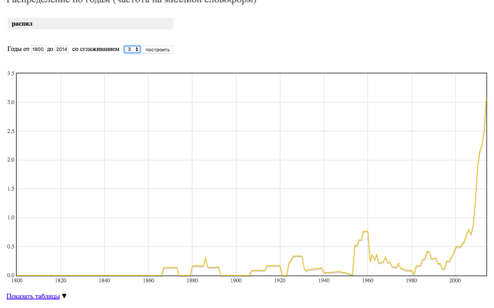Culturomics in corpora
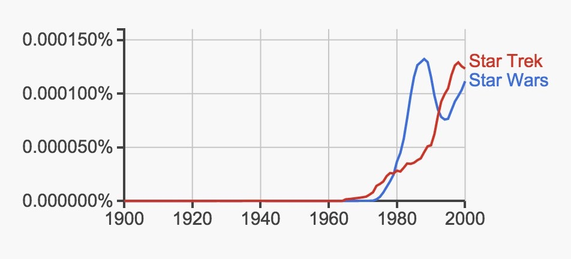BTW how many books do you think there are?
- Nobody really knows
- But in 2010 Google assessed it to be 130 mln.
- And digitized about 15 mln.
- Of which about 5 mln. were of normal quality and put online
Google Books
- 'Michel, Jean-Baptiste; Liberman Aiden, Erez (2011). Quantitative Analysis of Culture Using Millions of Digitized Books. Science. 331 (6014): 176–82'
Google Books
- 'The resulting corpus contains over 500 billion words, in English (361 billion), French (45B), Spanish (45B), German (37B), Chinese (13B), Russian (35B), and Hebrew (2B). The oldest works were published in the 1500s.
- The early decades are represented by only a few books per year, comprising several hundred thousand words.
- By 1800, the corpus grows to 60 million words per year;
- by 1900, 1.4 billion;
- and by 2000, 8 billion.
Google Books
- The corpus cannot be read by a human. If you tried to read only the entries from the year 2000 alone, at the reasonable pace of 200 words/minute, without interruptions for food or sleep, it would take eighty years.
- The sequence of letters is one thousand times longer than the human genome: if you wrote it out in a straight line, it would reach to the moon and back 10 times over.
Google Books
- 'We constructed a corpus of digitized texts containing about 4% of all books ever printed. Analysis of this corpus enables us to investigate cultural trends quantitatively.
- We survey the vast terrain of “culturomics”, focusing on linguistic and cultural phenomena <...>'
Google Books
- We show how this approach can provide insights about fields as diverse as lexicography, the evolution of grammar, collective memory, the adoption of technology, the pursuit of fame, censorship, and historical epidemiology.
- “Culturomics” extends the boundaries of rigorous quantitative inquiry to a wide array of new phenomena spanning the social sciences and the humanities.
Culturomics in Google Books
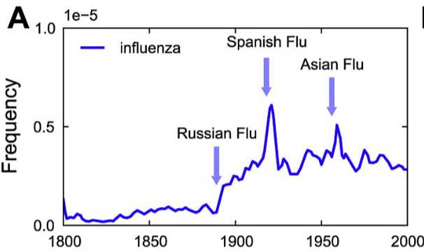Culturomics in Google Books
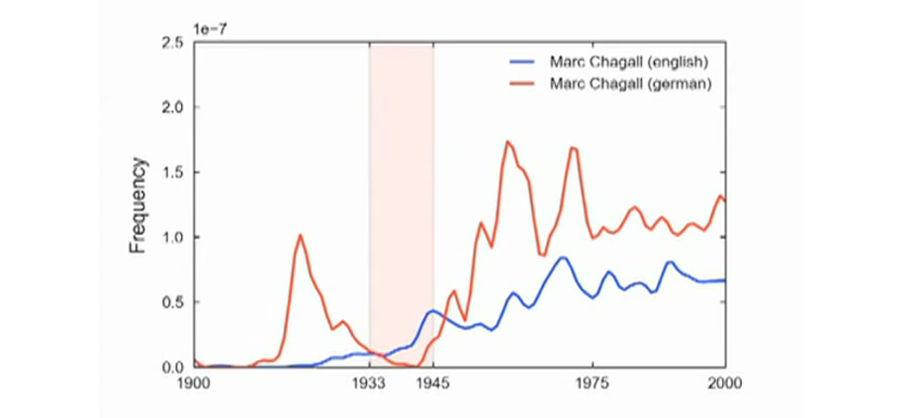Culturomics in Google Books
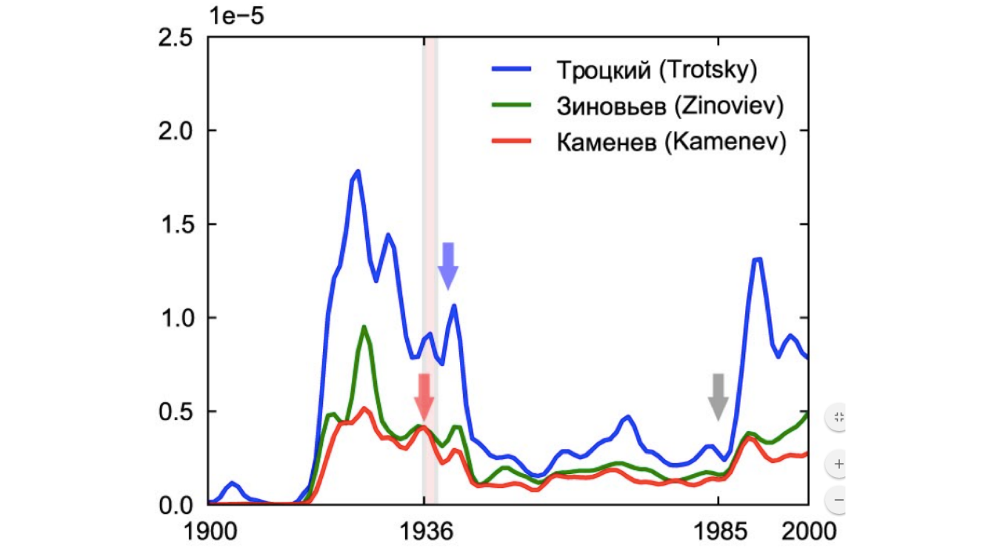Okay, let us go to the Ngram Viewer and learn by trying it
Some sample queries to try for yourself
- burned,burnt
- science,religion
- "наука,церковь
- Ленин,Сталин
- ((Bigfoot + Sasquatch) - (Loch Ness monster + Nessie))
- (Ленин-Сталин)
- в Украине/(в Украине+на Украине)
- hate *
- hate_VERB *_NOUN
- начальник *_NOUN
cross-language comparison
- интернет:rus_2012,internet:eng_2012
- color:eng_us_2012,colour:eng_us_2012,colour:eng_gb_2012,color:eng_gb_2012
- (to see OCR improvements):
Thou shalt not kill
...or Du sollst nicht töten
query syntax & more examples
What can linguistic corpora do that Google Ngram can't?
E.g. hit with something (instrument of hitting)
Comparing for men and women
related research
- Medium data method for cultural studies: the case of gender studies in Russian National Corpus
- Two Centuries of Russian Roads – Diachronic Study of Polysemy in the Context of Cultural Change
- Культуромика в национальном корпусе русского языка, к постановке задачи: три века русских дорог (Russian version in Труды ИРЯ)
Tools for working with your own corpus
Tools for working with your own corpus
- Voyant Tools (web application)
- AntConc (desktop corpus manager)
LINK TO FOLDER WITH DATA
stemming/lemmatisation for non-programmers
- English: text-processing.com/demo/stem
- Russian: text-processing.com/demo/stem
- Both limited
Russian lemmatisation without limitations
(but you'll have to write a couple of lines of code)
- MyStem tech.yandex.ru/mystem/
- a console application (to launch from cmd/terminal)
- pymystem3 python wrapper (slower!)
- can resolve morphological homonymy
- Pymorphy:
- free and opensource Python library
- uses opencorpora.org for morphology
- cannot resolve morphological homonymy
- Both limited in number of characters